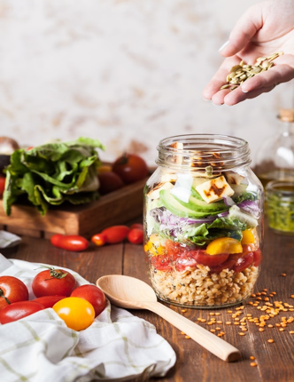

Harvest your seeds of growth with nutrition now, and
your key to living a healthy lifestyle will follow.
Image Source: Unsplash
|
Nutrition is the key to living a healthy lifestyle
Did you know? In the United States, the top leading cause of
death is heart disease in which more than 647,000 people have
died from it (CDC, 2020). The American Heart Association
predicts that "by 2035, 45% of the U.S. adult population will
live with cardiovascular disease at an annual cost of more than
$1 trillion" (AMA, 2018). Inadequate nutrition may result in a
costly, unhealthy lifestyle. Fortunately, many heart diseases
are preventable with regular physical activity, proper nutrition
and food intake.
Nutrition is the key to living a healthy lifestyle. When people
combine adequate nutrition with regular physical activity, the
benefits include:
- reduce risk of chronic diseases
- maintain stable weight
- improve self-esteem, self-image, and
well-being
- help the human body function normally
with energy and coordination
However, many people fail to realize and prioritize the value of
making healthy, nutritional decisions in their lives. It can be
easy to fall back on our previous unhealthy habits driven by
emotions, social situations, and other influential environments
in our lifestyles. What matters more is how we respond to the
problems that we will face with our health now rather than
waiting to react later when it becomes too late. Even small
changes in our habits can build up and bring significant impact
to living a healthier life. Remember, you are in charge of your
life.
It is important to do what is right for your mind and body. With
this in mind, our team presents you an opportunity to learn
something new with our simple tool -- a nutritional food intake
database.
|